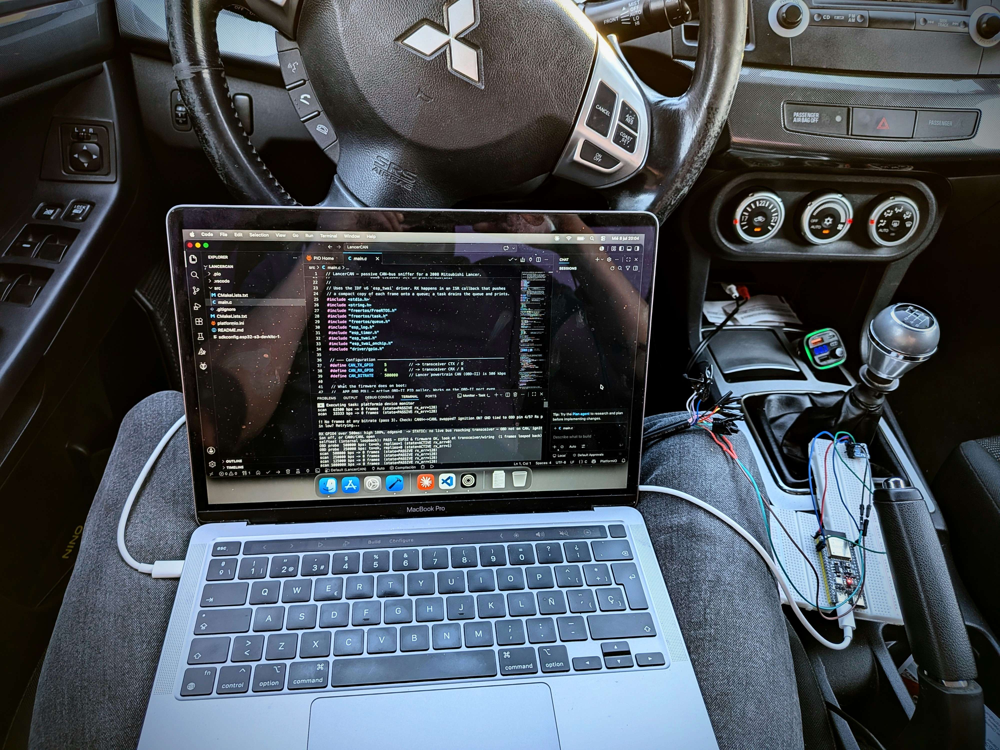

Project information
- Topic: Embedded / Graphic Programming
- Hardware: ESP32-S3, ILI9341, SN65HVD230
- Framework: ESP-IDF (FreeRTOS)
- Language: C
- Project date: 2026
- Personal Project
About the Project
A small screen for my Mitsubishi Lancer that shows the turn-by-turn navigation from my phone, together with a 3D model of the car and the real data of the car (fuel, coolant temperature, odometer and doors) read directly from its CAN bus. Everything is drawn by the CPU of an ESP32, without GPU and without any graphics library.
I love old cars. I like how tactile they are, real buttons, real knobs, nothing hidden behind a
touchscreen. But let's be honest, nowadays navigation is just too useful to not have it in the car,
and a phone stuck to the windshield never felt right to me. So I decided to add it myself. The idea was simple, a
cheap 2.8" display behind the steering wheel that tells me where to turn, so I don't have to look at
the phone while driving. Obviously it got a bit out of hand, and it ended up being a small 3D engine
running on a microcontroller.
The 3D part is based on my Software Rasterizer. I ported the
same triangle filling function to the ESP32 and built everything around it, so this project is kind
of the continuation of that one, but with much less memory, much less CPU and a real use at the end.
The following sections explain the most interesting parts.
Hardware
The brain is an ESP32-S3 with external PSRAM, connected to an ILI9341 display of 240x320 pixels
through SPI at 40MHz. To read the car I use a SN65HVD230 CAN transceiver connected to the CAN-B of
the Lancer, which is the low speed bus of the cabin (83.3 kbps) where the cluster, doors and body
modules talk to each other. The ESP32 is configured in listen-only mode, so it never transmits or
acknowledges anything, it only listens. I really didn't want to break something in my car.
The phone sends the navigation instructions over Bluetooth Low Energy in a tiny 6 byte packet
(maneuver type, roundabout exit, distance and some flags), so all the drawing and the logic stays on
the ESP32.
Render Pipeline
Sending a full frame to the display is expensive. 240x320 pixels in 16 bits are 150KB per frame, and SPI is not that fast. If I rendered and then sent the frame, the CPU would be waiting most of the time. So I use two framebuffers in PSRAM and split the work between the two cores of the ESP32. The render task on core 0 draws the next frame while the flush task on core 1 sends the previous one by DMA. They are synchronized with FreeRTOS semaphores, so one never touches the buffer the other is using.
static void flush_task(void *arg)
{
while (true) {
// Wait for the render task to hand us a finished frame.
xSemaphoreTake(frame_ready_sem, portMAX_DELAY);
// The buffer lives in PSRAM and was written through the cache, flush it
esp_cache_msync(buf[flush_idx], SCREEN_W * SCREEN_H * 2,
ESP_CACHE_MSYNC_FLAG_DIR_C2M);
// Hardware DMA transfer to the panel
esp_lcd_panel_draw_bitmap(panel_handle, 0, 0, SCREEN_W, SCREEN_H,
buf[flush_idx]);
xSemaphoreTake(dma_done_sem, portMAX_DELAY);
// Buffer is free for the render task to reuse.
xSemaphoreGive(flush_done_sem);
}
}
Each frame starts by copying a precomputed vignette background instead of clearing to black, so the background effect is basically free.
The 3D Car
The car is a low poly model of the Lancer with around 2100 triangles, exported to a C header. Every frame the vertices are rotated with a 3x3 matrix, projected with a simple perspective division and cached, so each vertex is transformed only once even if it is shared by several triangles. The lighting is flat shading against a fixed directional light, with a small fake specular highlight (the shade to the power of three) to give it a bit of shine.
Depth Sorting Without a Z-Buffer:
A depth buffer for the whole screen would take another 150KB of memory and one extra read and compare for every pixel, which is too much for this chip. Instead I use the painter's algorithm, drawing the triangles from the back to the front. Sorting 2000 triangles every frame with a normal sort is also slow, so I do a bucket sort. The depth range of the visible triangles is divided in 256 buckets, I count how many triangles fall in each one and then place them in order. It is linear time and, for a convex-ish object like a car, the result looks correct.
float zscale = (DEPTH_BUCKETS - 1) / range;
memset(depth_count, 0, sizeof(depth_count));
for (int v = 0; v < vis_count; v++) {
int bkt = (int)((vis_z[v] - z_min) * zscale);
if (bkt < 0) bkt = 0;
if (bkt >= DEPTH_BUCKETS) bkt = DEPTH_BUCKETS - 1;
vis_bucket[v] = (uint8_t)bkt;
depth_count[bkt]++;
}
// Far buckets first, so near triangles are painted on top
uint16_t pos = 0;
for (int bkt = DEPTH_BUCKETS - 1; bkt >= 0; bkt--) {
depth_start[bkt] = pos;
pos += depth_count[bkt];
}
for (int v = 0; v < vis_count; v++) {
sorted_vis[depth_start[vis_bucket[v]]++] = (uint16_t)v;
}
Before sorting, back facing triangles are discarded with the same cross product test as in the rasterizer, which removes around half of the work.
Anti-Aliasing:
On a screen this small the edges of the triangles looked really bad, full of jagged steps. The solution was supersampling, but only where it matters. I calculate the bounding box of the car on the screen, render only that region at 2x resolution in a separate buffer and then downsample it by averaging every 2x2 block. That way I don't pay the 4x cost for the whole screen, only for the car.
One detail that took me a while is that the display expects the RGB565 pixels with the bytes swapped, so every sample has to be un-swapped before separating the channels, and swapped again at the end.
for (int x = 0; x < rw; x++) {
const uint16_t *blk = base + x * N;
unsigned rr = 0, gg = 0, bb = 0;
for (int sy = 0; sy < N; sy++) {
const uint16_t *srow = blk + sy * ss_pitch;
for (int sx = 0; sx < N; sx++) {
unsigned s = UNS(srow[sx]); // undo the byte swap
rr += (s >> 11) & 0x1F;
gg += (s >> 5) & 0x3F;
bb += s & 0x1F;
}
}
rr >>= 2; gg >>= 2; bb >>= 2; // divide by 4 samples
unsigned o = (rr << 11) | (gg << 5) | bb;
out[x] = (uint16_t)UNS(o);
}
Navigation HUD
When a route is active the screen shows animated dashed lane lines drawn under the car that follow the shape of the next maneuver, an icon, the distance and the instruction text on top. The car itself also reacts. Each maneuver (turn left, sharp right, roundabout, U-turn, ramps, forks...) has its own pose, and the car smoothly interpolates to it, so it looks like it is actually taking the turn. And since it is my car, it also leaves a bit of tire smoke behind.
While the turn is still far away (more than 2km) it just says "Sigue recto" with the remaining distance, since showing a turn arrow for something that is 10 minutes away is more confusing than useful. When no phone is connected the car spins slowly in the middle of the screen, and when the phone is connected but there is no route it stays facing forward with the odometer on top.
Animated Lane Lines:
The lane lines are not images, they are drawn every frame, and there are three different ways of drawing them depending on the maneuver.
When going straight there are two dashed lines in perspective, drawn row by row from a vanishing point, so the further down the screen (closer to the camera), the wider apart, thicker and brighter they are.
For turns, U-turns and roundabouts the path is a parametric curve. A turn is a straight entry, an arc with the angle of the turn and a straight exit, the U-turn is a half circle and the roundabout is a full ring. I sample the curve in 140 points and offset each one along its normal to get the two edges of the lane.
Keep, fork, merge and ramp are built from straight segments, with the branch you have to take drawn bright and the other one dimmed, so you can see both roads but you know which one is yours.
The dashes move towards the car to give the feeling of driving forward. To make them move at the same speed along a curve, the dash pattern is based on the distance travelled along the path (the arc length) instead of the screen position, and it scrolls by exactly one dash each cycle, so the loop never jumps. The lines also fade in at the top and fade out at the bottom so they don't have hard ends. Since the shape of a curve only changes when the maneuver changes, all the points, normals, widths and intensities are cached, and each frame only decides which points are part of a dash and draws them.
Every point is drawn as a small antialiased dot. Instead of turning pixels on or off, each pixel gets blended towards white depending on how close it is to the center of the dot. This way the lines look smooth and can be placed between pixels, which is important on a screen this small.
int glow = (int)(intensity * (1.0f - r2 * inv2) + 0.5f); // 1 at the center, 0 at the edge if (glow <= 0) continue; uint16_t cur = dst[idx]; uint16_t s = (cur >> 8) | (cur << 8); // undo the byte swap int r = (s >> 11) & 0x1F, g = (s >> 5) & 0x3F, b = s & 0x1F; r = r + (((255 >> 3) - r) * glow) / 100; // blend towards white g = g + (((255 >> 2) - g) * glow) / 100; b = b + (((255 >> 3) - b) * glow) / 100;
Tire Smoke Particles:
The smoke is a small particle system with a fixed pool of 32 particles, so there are no memory allocations while driving. The tricky part is knowing where to spawn them, because the car is constantly rotating and changing its pose. Every frame I take the four wheel positions of the model, transform them with the same rotation matrix as the car and project them to the screen. The two that end up lowest on the screen are the rear wheels, because they are the ones closest to the camera. The backward direction of the car on screen comes directly from the rotation matrix, so the smoke always goes out from the back, whatever the pose.
// Car backward direction in screen space = -(forward), where the // model +z axis projects to (m[2], m[5]). Smoke trails along it. float fdx = matrix3x3[2], fdy = matrix3x3[5]; float fl = sqrtf(fdx * fdx + fdy * fdy); if (fl < 1e-4f) fl = 1.0f; float bdx = -fdx / fl, bdy = -fdy / fl;
Each frame up to three dead particles are reborn at the rear wheels with a bit of randomness in the position, and a velocity that goes backwards and slightly outwards, the left wheel to the left and the right one to the right. For the random numbers I use a tiny xorshift generator, much cheaper than the standard one. As a particle gets older it shrinks and fades, and it is drawn as a soft grey circle with the same kind of blending as the lane dots.
// Dead slot, respawn at a wheel (px_, py_ = perpendicular to the backward direction) float spd = 1.2f + 0.8f * r2; // backward speed float fan = (right ? 1.0f : -1.0f) * (0.10f + 0.20f * r3); // outward p->vx = bdx * spd + px_ * fan; p->vy = bdy * spd + py_ * fan; p->age = 0.0f; p->life = 18.0f + 10.0f * r3; // Every frame move, accelerate backward a touch, and age p->x += p->vx; p->y += p->vy; p->vx += bdx * 0.05f; p->vy += bdy * 0.05f; p->age += 1.0f; float k = 1.0f - p->age / p->life; float rad = 1.0f + 5.0f * k; // big at the wheel, shrinks as it trails int inten = (int)(70.0f * k); // fades as it shrinks splat_smoke(dst, p->x, p->y, rad, inten);
The smoke is drawn into the frame before the car, so the car covers it and it really looks like it comes from under the wheels.
Reading the Car
This was probably the hardest part, and not because of the code. Mitsubishi does not publish what each message on the CAN bus means, so I had to find it myself. I logged the bus while doing things in the car, like opening doors, and looked at which bytes changed. That way I found the doors, the coolant temperature and the odometer. The fuel level was more tricky, because it changes very slowly, so I added a mode that dumps the last value of every message ID, took snapshots with different amounts of fuel in the tank and compared them until only one byte made sense.
switch (rx.header.id) {
case 0x154: if (n > 0) { int f = ((int)b[0] - FUEL_EMPTY) * 100 /
(FUEL_FULL - FUEL_EMPTY);
g_fuel_pct = f < 0 ? 0 : (f > 100 ? 100 : f); } break;
case 0x02C: if (n > 1) g_coolant_c = (int)b[1] - 40; break;
case 0x311: if (n > 2) g_odo_km = ((long)b[0] << 16) | (b[1] << 8) | b[2]; break;
case 0x013: if (n > 2) g_doors = b[2]; break;
}

The electrical side also taught me a lot. The CAN-B of this car is a fault tolerant, low speed bus, and the SN65HVD230 is designed for the high speed one, so the "obvious" wiring did not work at all. After a lot of trial and error with the wires behind the cluster I got it working, and I ended up understanding much better how CAN works at the electrical level than any course taught me.
Door View:
When a door is opened, the car rotates to a top-down view and, at the exact moment it arrives, it is swapped for a second model with separate doors that open with an animation, showing which ones are open and a "Puerta Abierta" warning. When they close, everything goes back in the reverse order. Everything is interpolated, there is never a hard cut, which was the part that required more tuning to make the two models match perfectly at the swap.
Small Details
Since this is something I see every day, I spent more time than I would like to admit on small things. There is a boot animation with the Mitsubishi logo fading in and out, and then the background fades in while the car flies into the frame and the gauges slide up from the bottom. The fuel and temperature gauges are always visible at the bottom, and the odometer has its own custom font, thousands separator and an antialiased underline.
The project is still alive, but it is already installed in the car and I use it every day, which is probably the best part of this project.